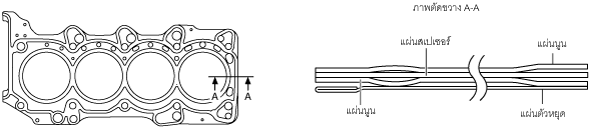

ปะเก็นฝาสูบ [SKYACTIV-D 2.2]
id0110s5000300
จุดประสงค์/ฟังก์ชั่น
• ปะเก็นฝาสูบครอบปิดบริเวณระหว่างฝาสูบและเสื้อสูบเพื่อป้องกันการรั่วของส่วนผสมอากาศกับน้ำมันเชื้อเพลิง ก๊าซเผาไหม้ น้ำมันเครื่อง และน้ำหล่อเย็นเครื่องยนต์
โครงสร้าง
• มีการใช้ประเก็นโลหะแบบสี่ชั้นเป็นปะเก็นฝาสูบ

ac5wzn00001999